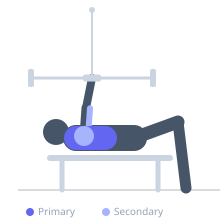

Exercise guide / Lying Cable Chest Press
Lying Cable Chest Press
A chest press performed lying on the floor or a flat bench with cable machines positioned at floor level on each side. Unlike dumbbell or barbell pressing, the cable provides constant resistance throughout the full range of motion, including at full extension where free weights would have zero loading. The lying position limits the range (the floor prevents the elbows from dropping below body level) but the cable tension at lockout provides a unique stimulus at the top of the press that free weights cannot replicate.
Primary muscles
pectoralis major sternal
pectoralis major clavicular
Secondary muscles
triceps long head
deltoid anterior
Stabilizers
trapezius lower
Equipment
Cable Machine (Low Pulley)
Optional
Flat Bench


Starting position
- Lie on the floor or a flat bench positioned between two low cable pulleys. Hold the D-handles of the cables with hands at chest level, elbows bent at approximately 90 degrees.
Setup
- Position the bench between two cable stacks with the cables at their lowest setting. Adjust so the cables come from low and to the sides, pulling the handles outward and downward at the bottom of the press.
Steps
- Step 1: Lie with handles at chest level, elbows bent and in contact with the floor (floor press) or just above chest level (bench).
- Step 2: Press both handles upward and together, extending the elbows and squeezing the pecs at the top.
- Step 3: Hold at full extension with the handles together — the cable tension remains at lockout.
- Step 4: Lower under control back to the start. Repeat.
Coaching cues
- Feel the cable pulling inward at the top — squeeze the chest hard to control it
- Keep the shoulder blades retracted on the bench throughout the press
- Equal weight on both sides — do not let one arm lead
Breathing
- Inhale as you lower. Exhale during the press.
Range of motion
- Full elbow extension at the top. For floor press: elbows to floor level at the bottom.
Tempo
- 3s eccentric, 1s bottom pause, 2s press.
Common mistakes
- Cables positioned too high, reducing the loading at the bottom
- Losing scapular retraction at lockout — maintain shoulder blade position throughout
- Pressing one side faster than the other, creating rotation
Safety
- Ensure both cable stacks are at the same weight
- If using the floor, the elbows cannot go below body level — this limits ROM but reduces shoulder stress
Training
- hypertrophy: 10–15 reps
- hypertrophy: 2–4 sets
- Rest: {'hypertrophy': 90}